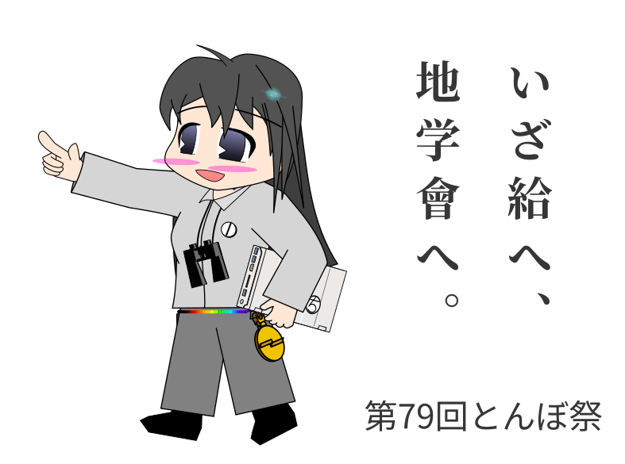
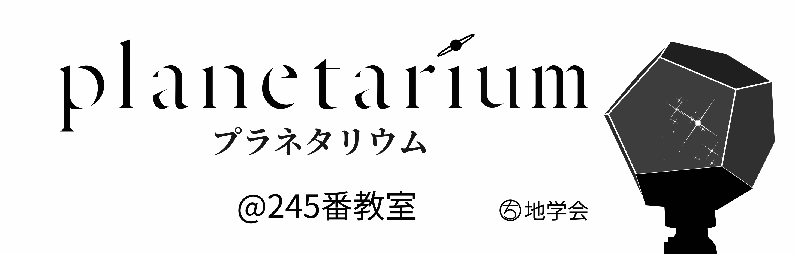
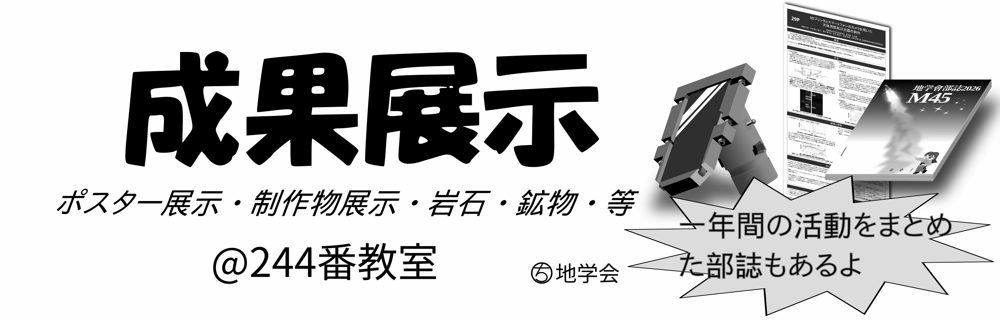
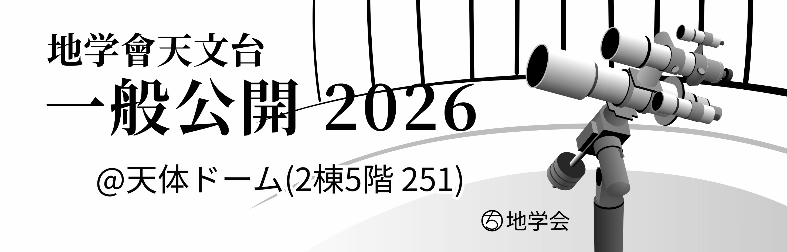
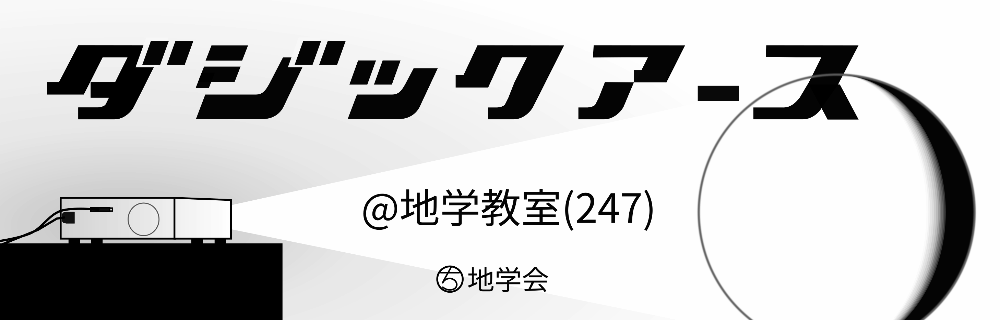

| トップ | 地学會について | つくったもの | とんぼ祭 | お問い合わせ | |||||
|
|||||||||

松本深志高校地学會のホームページです。

 地学會とは？
地学會とは？
松本深志高校地学會は、地学分野を広く扱う自然科学系の部活動です。
なにをするところ？
詳しくは、「地学會について」をご覧ください
 第79回とんぼ祭
第79回とんぼ祭

おしらせ
部誌はこちらから！
展示

〜決して消えることのない無窮のきらめき〜
「春」「夏」「秋」「冬」の番組では，それぞれの 季節の一部の星座あアステリズムの特徴や，見付け方を 解説します．
「神話」では，ギリシャ神話の英雄ヘラクレスの激動 の人生を星座を交えて紹介します．
解説はレーザーポインタを使った部員の生解説 で行います．
･ ｡
: ∴｡ * * .
* ･`.･ .
* ･ .ﾟ｡ * +
･ ﾟ.｡･ﾟ★ . 。
ﾟ･. . 。゜. ★
* ﾟ｡·.･｡ ﾟ- ` ゜
ﾟ *.｡ . +
. .･ﾟ*. .
* ﾟ･｡ . ｡ ゜
･ ﾟ★ *

〜地学會の研究発表〜
模造紙や制作物を通して1年間の研究成果、 活動記録をわかりやすく展示します。
地学會同人誌「M45」もお楽しみに！
〜県内有数の高校天文機材を見てみよう〜
高倍率で松本城が見られます．
条件次第では，昼間の星が見られるかもしれません．
天体用CMOSイメージセンサ(~カメラ)による撮像も行います．
赤道儀・望遠鏡・イメージセンサ・大型のドーム・コンピュータなど， 高校には珍しい本格的な機材にもぜひご注目ください
〜宇宙でたたずむ！？地学會一の映えすポット〜
球体スクリーンに地球や惑星を投影します．宇宙空間で惑星を俯瞰しているような不思議な気分に。
ぜひ写真を撮ってSNSへ！
since 2026-04-15
================
Copyright © 2026 松本深志高等学校地学會